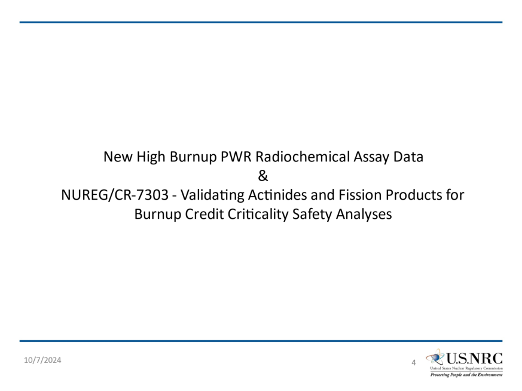
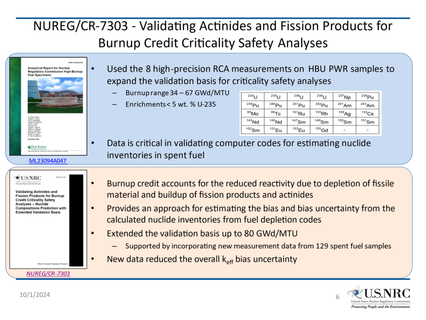
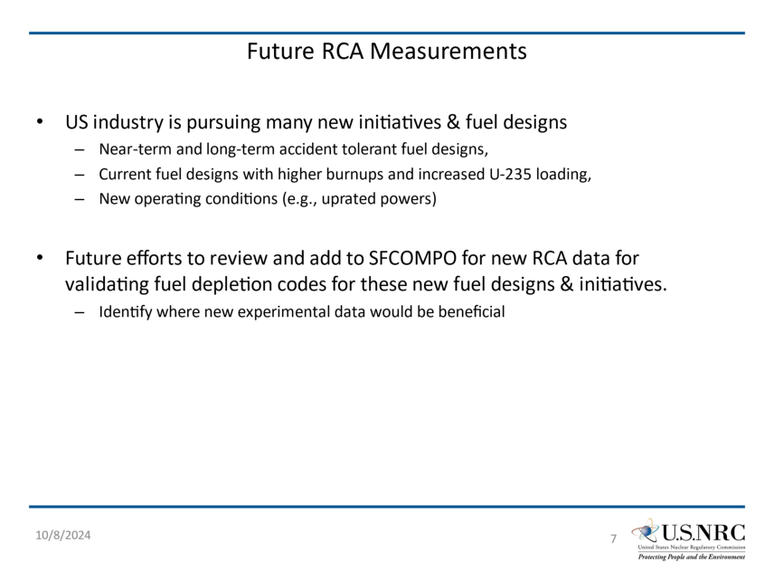

Friday, October 11, 2024 at 10:10:17 Eastern Daylight TimeFriday, October 11, 2024 at 10:10:17 Eastern Daylight Time
Subject:Subject: Re: Re: For Review - Slides on RCA work, completed and future
Date:Date: Thursday, October 10, 2024 at 3:49:40 PM Eastern Daylight Time
From:From: Procop, Germina
To:To: Lucas Kyriazidis
CC:CC: Wieselquist, William, Procop, Germina
Attachments:Attachments: image001.png, image002.png, image003.png, image004.png
Lucas,
Please see some responses below. If you believe a short Teams call would help for more clarification, that would work for me.
SFCOMPO is a database that provides RCA measurement data and information as available in public references about the experiments and the fuel that was measured (design and operating history). The data in the database was not evaluated evaluated before being included in the database, just
curated.curated. That involved ensuring that information (on experiments or measured fuel characteristics
and operation history) is available to make a specific added data set a potential potential basis for
developing a benchmarkbenchmark. The curation involved independent review to verify that the information
added to the database is consistent with the primary references. The quality of the data, including the uncertainties, are not evaluated before entering the data set in the database.
Qualification/evaluation of the data is a separate e]ort. The ultimate goal of an evaluation is to develop reliable benchmarks and benchmark models for use by the community. In contrast to ICSBE criticality benchmarks for which the key metric of interest is generally only one number (ke]), an SFCOMPO evaluation needs to address additional types of challenges, such as treatment of time-dependent operating data, and analysis of uncertainties in both modeling data and radiochemistry measurements, for numerous measured nuclides.
At this time, there are only 4 SFCOMPO evaluations developed based on the mentioned evaluation guidance and which were approved by the SFCOMPO Technical Review Group. An evaluation report discusses a set of RCA data for a given reactor type and fuel assembly from which the samples were selected or for a measurement campaign, therefore there is not an evaluation report per one measured fuel sample. The included samples in a given report may share a lot of information relative to design and operation history or experiment, therefore they share potential biases on the modeling or experiment side, and it makes sense to analyze them as a set. The titles of the 4 mentioned evaluation reports and the number of samples evaluated in each report are shown below.
“Evaluation of Three Mile Island Unit 1 Fuel Samples — Assemblies NJ05YU and NJ070G (Type 15 x15)” (24 samples) “Evaluation of Fukushima-Daini-1 Samples — Assemblies 2F1ZN2 and 2F1ZN3 (Type 9×9-9)” (13 samples) “Evaluation of Fukushima-Daini-2 Samples SF98 and SF99 Assembly 2F2DN23 (Type 8x8-2)” (18 samples) “Evaluation of Gösgen GU4 Sample in 15x15-20 Assemblies 1601 & 1701” (1 sample)
On your question: “to evaluate new experimental measurements against the Evaluation Guide for Evaluated Spent Nuclear Fuel Assay Database. In terms of time and resources, what would be required?”
That’s a great question. And the answer would depend on evaluator, evaluated set, etc. The most important requirement is to have a qualified evaluator(s) and the funding to perform the evaluation. That’s the big challenge. Identifying independent reviewers within the TRG is a challenge too, but that’s a di]erent problem, much easier than the first.
Regarding the evaluation of the 9 North Anna samples per the SFCOMPO evaluation guidance, I think my initial estimate was 1FTE if ORNL would do it, with me as evaluator and Ugur and/or Georgeta as internal reviewers. I think we can make it with this small budget, if considering what is used for ICSBE or IRPHE evaluations. For the latter, at the time he was coordinating the groups, John Bess cited ~1mil per evaluation report. Will may know better what is going on these days, as DNSCH funded recently the development of new criticality benchmarks. Hopefully next year DNCSH may consider opening proposals to address back-end.
I would not worry about finding independent reviewers. The independent review is free if performed by a SFCOMPO TRG member. Given the value of the North Anna data, I think people would love to have a first look at, and the power of making recommendations that must be addressed in the final version of the report. Everybody would love to have a well-done evaluated benchmark available.
Kindest regards, Germina
Date: Date: Thursday, October 10, 2024 at 9:22 AM To: To: Procop, Germina procopg@ornl.gov Cc: Cc: Wieselquist, William wieselquiswa@ornl.gov Subject: Subject: [EXTERNAL] RE: Re: For Review - Slides on RCA work, completed and future
Good Morning Germina –
Thank you so much for this response. This is exactly what I was looking for and the level of detailed I wanted.
In terms of adding new samples to SFCOMPO, I envision what is required is to evaluate new experimental measurements against the “Evaluation Guide for Evaluated Spent Nuclear Fuel Assay Database”. In terms of time and resources, what would be required? Is it identifying and allocating time to qualified & independent reviewers / verifiers that ensure all the required information is captured, in addition to performing benchmarking? Is it dependent on how well the experiment was documented? Are we seeing that newer RCA measurements are easier to incorporate into SFCOMPO? Has there ever been a time, entries were being prepared for SFCOMPO, when verifiers realized the experiments just had too much uncertainty? (Sorry for the many questions, this is just very interesting to me).
Out of curiosity, what’s a rough order-of-magnitude required to add one sample to SFCOMPO? For
example, what would the cost per sample be required to add the MALIBU measurements to SFCOMPO? How about the 9 HBU PWR samples? I assume on a cost per sample basis, they are all in the same ballpark (is this true?).
Thanks, Lucas Kyriazidis
PS – after reading your response, I don’t think there is a need to update the histogram. The histogram was a snapshot of available PWR RCA datasets from ~2019 (SFCOMPO and other sources of data, this is what I wrongly assumed). We could reflect an updated figure to showcase the now available PWR RCA datasets, but I don’t think it’s necessary. I will ensure that point is made during my talk. What is important here is to note that the histogram is not a reflection of what’s available in SFCOMPO but a compilation of what “we” knew at the time on data that could be used. Now that my mind has been on spent fuel activities and SFCOMPO, I did chat with Bruce, some time ago, related to adding some new task language, in the new SCALE contract, for new entries to SFCOMPO. We haven’t awarded the contract yet – but we will revisit this soon.
From:From: Procop, Germina procopg@ornl.gov
Sent:Sent: Wednesday, October 9, 2024 6:05 PM
To:To: Lucas Kyriazidis Lucas.Kyriazidis@nrc.gov
Cc:Cc: Wieselquist, William wieselquiswa@ornl.gov; Procop, Germina procopg@ornl.gov
Subject:Subject: [External_Sender] Re: For Review - Slides on RCA work, completed and future
Hi Lucas,
Thank you for publicizing our work to a di]erent audience.
Regarding your specific questions, please see attached. I am glad that you asked. I always postponed writing down where the math is coming from regarding the number of considered samples.
I would be happy to generate any histogram or plot that may be helpful. Just let me know, after reading the attached summary.
All the best, Germina
Date: Date: Wednesday, October 9, 2024 at 10:55 AM To: To: Procop, Germina procopg@ornl.gov Cc: Cc: Wieselquist, William wieselquiswa@ornl.gov Subject: Subject: [EXTERNAL] For Review - Slides on RCA work, completed and future
Good Morning Germina,
As I mentioned last week, I drafted up some high-level slides that cover some of the past RCA work we completed and the NUREG/CR-7303 issuance. Could you please take some time to review and provide any comments?
A few questions / comments that I am hoping you can clarify.
Prior to the RCA work for the HBU PWR samples (North Anna samples), we reviewed SFCOMPO to summarize where gaps existed. This is showcased one Slide 5, with the histogram, where we can see gaps exist for PWR fuels above 60 GWd/MTU. With the addition of the new RCA measurements (the 8 NRC samples and 8 DOE samples), do we have an updated figure that showcases the new samples in a histogram? I guess this would be a new histogram, where it would be neat to see a before and after. In addition, when we updated the vlaidation suite, up through 80 GWd/MTU in NUREG/CR7303, we included a lot more samples than the 8 samples sponsored by the NRC. It was stated we included 129 new fuel samples / measurements.
How many of these new samples were never in SFCOMPO? Were any of the 129 samples, not reflected in the histogram in Slide 5? Could you exand upon this? Out of the 129 samples added to the valdiation suite – how many were already in SFCOMPO? How many were not included in SFCOMPO? And are there plans to add any new datasets to SFCOMPO.
Thanks, Lucas Kyriazidis


